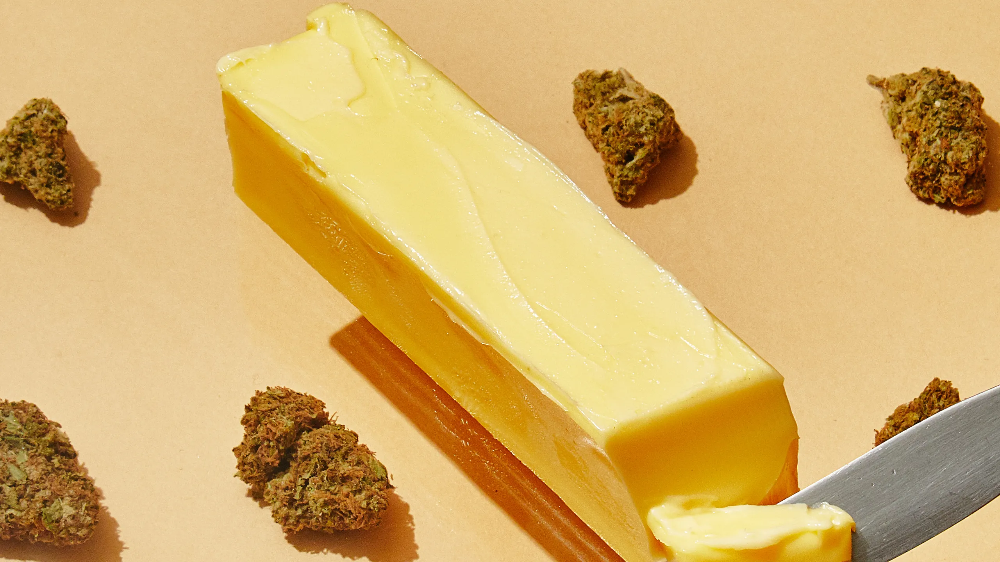

Cannabutter

Cannabutter is an essential base to most weed recipes!
Ingredients
- 1 cup butter
- 1 gram flower
- 1 cup ground cannabis
Steps
- Decarb the cannabis. Preheat the oven to 245ºF. Cover the baking sheet with parchment paper and place the loosely broken up cannabis on it. Heat in the oven for 30-40 minutes. Gently mix the buds every 10-15 minutes to expose all sides of the buds. (Older, drier cannabis may require less time.) Tip: You can also set your oven to 300ºF and heat for 10-15 minutes, although the low-and-slow approach is recommended to better preserve cannabinoids and terpenes.
- Grind or break up the cannabis. Grinders break weed down to the same consistency and will save you time, but you can just as easily break up the weed with your hands. Keep in mind that anything small enough to fit through the mesh strainer or cheesecloth will end up in your finished product, so be careful not to grind the weed into a fine powder.
- Melt the butter. On low heat, melt 1 cup of butter in a saucepan, stock pot, double-boiler, or slow cooker. Add 1 cup of water, which will help regulate temperature and prevent the butter from scorching.
- Add the cannabis. After the butter is fully melted, add in the decarbed cannabis.
- Simmer. Simmer on low heat, between 160-200ºF; don’t exceed 200ºF or you may burn out the cannabinoids. Simmer for 2-3 hours, stirring occasionally. The mixture should never come to a full boil.
- Strain the mixture. Place a mesh strainer or cheesecloth over a jar and pour the butter/cannabis mixture through it. Discard the plant material. Tip: Don’t squeeze out every bit of butter—this will add chlorophyll to your cannabutter, giving it a bad plant taste.
- Refrigerate. Place the jar of butter in a fridge, and let it solidify before using, ideally overnight, or a few hours at least. If excess water forms at the bottom of the jar, remove the solid butter with a knife and drain out the water.